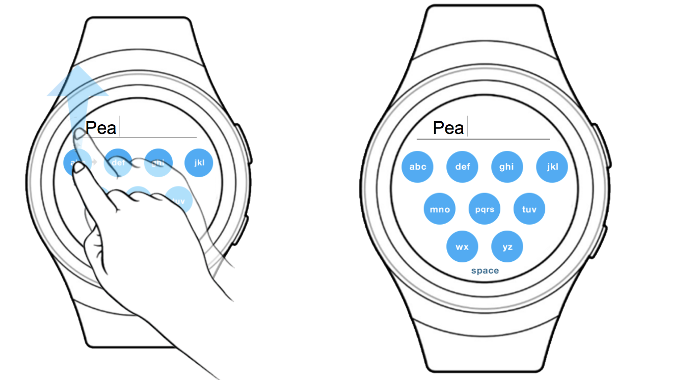
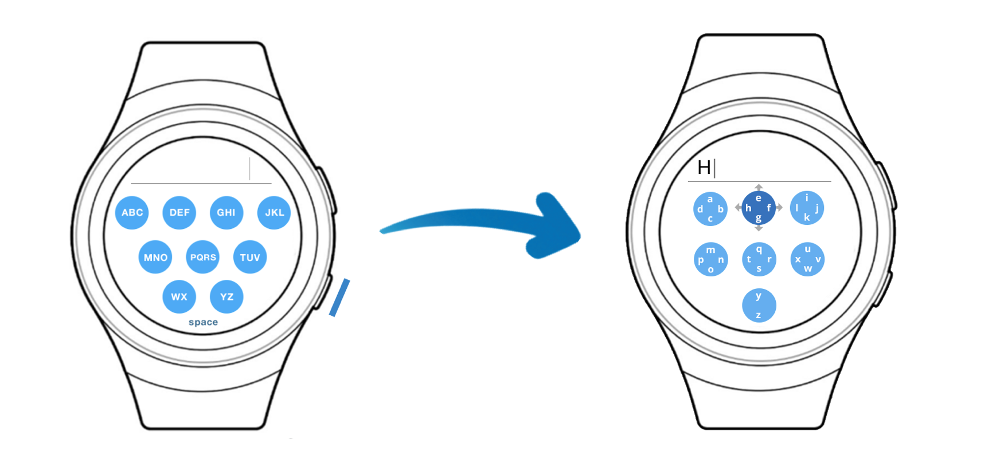

Flickerr Text Entry Method Design
This is a text entry method designed for SAMSUNG Gear S2. It enables user to type letters, numbers, as well as special characters. It primarily uses swiping in four different directions to allow users to select a certain letter. It reserves most functionalities needed for small device text entry, but also keeps a relative fast speed of text entry.
Device
When talking about small device, everyone thinks about watch. While iwatch is widely being selected, Samsung watches don't have that much attentions on them. Therefore, we wanted to design a text entry method for Samsung Galaxy S2. One of the major reason that we chose it is because the bezel hardware is capble of doing more stuff.

Design Process
Brainstorming
We started with brainstorming ideas, which are text entries that might be intuitive to use while having a constant speed. According to capabilities of the watch, rotating is considered to be a featured of the ideal text entry during the brainstorming stage. Also, considered the restrictions of the small touchscreen, idea of t9 were widely used in the design sketches, which is having multiple letters in one cluster.

Flip Book Of Two Chosen Ideas
Idea 1 | Rotation
This idea pandered to an intuitive technique that was easy to learn. Assuming that the user would be entering brief text phrases, the user could tap quickly and know exactly what to expect when tapping on the smartwatch’s screen. We decided to keep the top button of the watch reserved for going back to the home screen, and used the bottom button to switch between modes, as it would be unlikely that the user would have to switch between uppercase/lowercase letters on a frequent basis. While we did consider touch-sensitive rings, we decided on using the bezel that that can physically “snap” onto every group of letters. This would allow for the user to make their selection with greater confidence, hearing and feeling the bezel snap along each group, even if the screen were to lag behind and not immediately show the selected group. Touch-sensitive rings are more ambiguous in that the user would not know when to stop moving their finger around the ring to select the appropriate group, increasing movement time by having to go in a different selection if they went too far around the ring.


Idea 2 | Swipe
This idea primarily uses swiping to allow users to select certain letter. In order to select a letter, user would quickly tap the circle and three arrows will pop up to indicate that users can swipe in three different directions. We considered double tabbing originally, but found it actually takes more interaction and time to do that. Swiping instead, is simple and smooth, and the user would be able to learn quickly. So for the left letter, the user would swipe upward. For the middle letter, the user would swipe left and for the letter on the right, the user would swipe downward. There is one exception, the circle located in the middle, ‘PQRS’ will require user to swipe in four different locations to select letter. In this situation, Q corresponds to swiping right and R will correspond to a swipe left. User can easily tab space at the bottom, and we would assume there are max two to three words appear at the text bar. We decided to use the bezel to switch modes (ex. Shift mode), and keep the top button of the watch for going back to the homescreen, holding to delete, and used the bottom button to send the text.

- 
- /li>
Critique & Iteration
After group discussion, we decided to use the cluster idea. In the class critique, we received multiple comments of the current design. Including having three different directions might be confusing to the users, also some position of the clusters might cause "fat finger" problem. Therefore, I suggested to using four letters in one cluster and putting space and delete into the last cluster.
Key Concepts
Final Design Principle
There will be four letters in a cluster. Letters are located in four directions. Users swipe to select a letter. In the last cluster, swipe left for backspace and swipe right for space. Using bezel to switch to specific character mode, upper button reserved for returning to the watch’s home menu and lower button used for switching between letter cases
Usability Testing
Finally, we did three user texting to demonstrate our technique Flickerr on a wearable device. We created a program that runs on windows to mimics the gestures of the input interaction on a SAMSUNG Gear S2 watch. The result shows that Flickerr is an intuitive and familiar input gesture where our users adapted almost instantaneously. With a relatively low error rate and WPM speed that rivals existing input methods, our study proves that Flickerr is an easy-to-use text input method for wearable devices.
Evaluation Results
AVERAGES:
CONTRAST:
Final Deliverables
This is a interactive prototype we created, it demonstrates how the text entry should work.